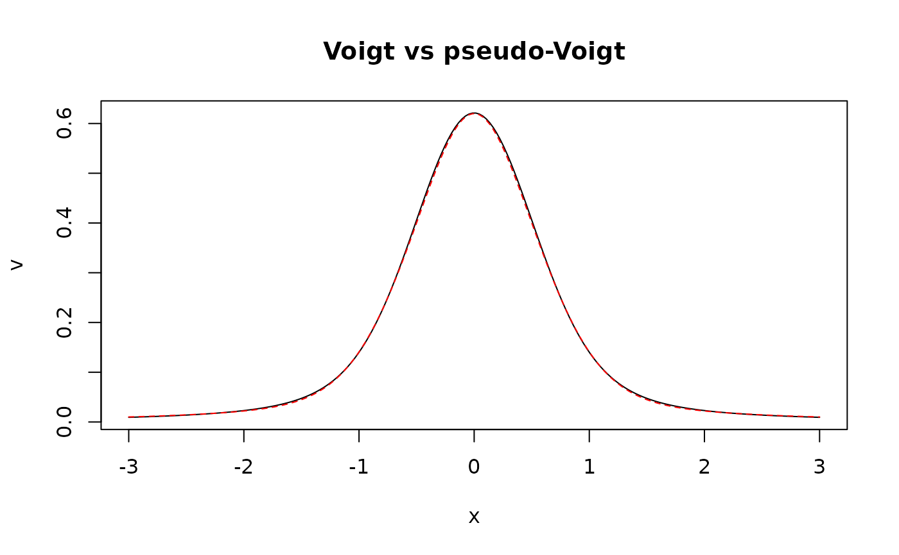

Computes the exact Voigt profile, the convolution of a Gaussian and a Lorentzian profile. In laser-induced plasmas, the Gaussian component typically reflects Doppler and instrumental broadening, and the Lorentzian component Stark (pressure) and natural broadening.
Arguments
- x
A numeric vector representing the independent variable (e.g., wavelength).
- y0
A numeric value specifying the baseline offset.
- xc
A numeric value representing the center of the peak.
- wG
A non-negative numeric value specifying the Gaussian full width at half maximum (FWHM).
- wL
A non-negative numeric value specifying the Lorentzian FWHM.
- A
A numeric value representing the peak area.
Value
A numeric vector containing the values of the Voigt function
evaluated at the provided x values.
Details
The Voigt function is defined as:
$$y = y_0 + A \int_{-\infty}^{\infty} G(t; w_G)\, L(x - x_c - t; w_L)\, dt = y_0 + A \frac{\mathrm{Re}[w(z)]}{\sigma\sqrt{2\pi}}, \quad z = \frac{x - x_c + i\gamma}{\sigma\sqrt{2}}$$
where \(w(z) = e^{-z^2}\mathrm{erfc}(-iz)\) is the Faddeeva function, \(\sigma = w_G / (2\sqrt{2\ln 2})\) is the standard deviation of the Gaussian component and \(\gamma = w_L / 2\) is the half width at half maximum of the Lorentzian component. Both components have unit area, so \(A\) is the area of the line.
The Faddeeva function is evaluated in C++ with Weideman's (1994) rational
approximation using 32 terms. Its relative error is below \(10^{-10}\)
over the range of widths met in emission spectroscopy. A width of zero gives
the pure Gaussian or pure Lorentzian profile. See pseudo_voigt_profile()
for the faster pseudo-Voigt approximation.
References
Weideman, J.A.C., (1994). Computation of the complex error function. SIAM Journal on Numerical Analysis, 31(5):1497-1518.
Armstrong, B.H., (1967). Spectrum line profiles: the Voigt function. J. Quant. Spectrosc. Radiat. Transfer, 7(1):61-88.
Examples
x <- seq(-3, 3, length.out = 200)
v <- voigt_profile(x, y0 = 0, xc = 0, wG = 1, wL = 0.5, A = 1)
pv <- pseudo_voigt_profile(x, y0 = 0, xc = 0, wG = 1, wL = 0.5, A = 1)$y
plot(x, v, type = "l", main = "Voigt vs pseudo-Voigt")
lines(x, pv, col = "red", lty = 2)

max(abs(v - pv)) / max(v) # pseudo-Voigt relative error
#> [1] 0.01126118